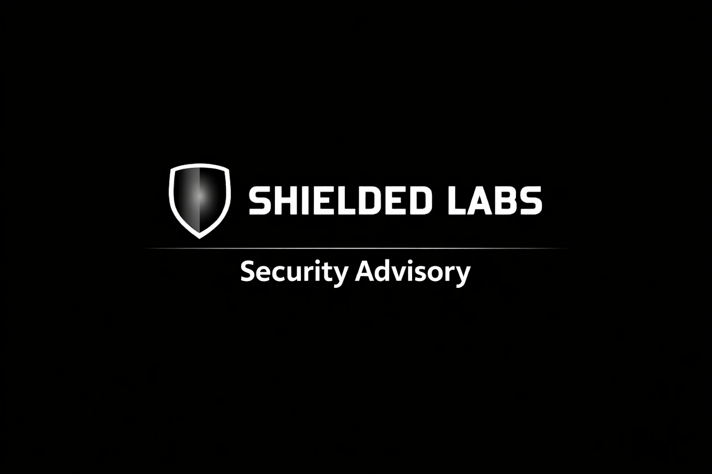

Advisory: Reduce Your zcashd Attack Surface by Shielding It Behind Zebra

Shielded Labs recommends that exchanges, custodians, infrastructure providers, and anyone running a publicly-reachable zcashd reduce their attack surface by placing Zebra in front of it. This is a simple, low-risk change that can materially reduce exposure to network-based attacks without changing how zcashd is used.
Recent vulnerability discoveries highlight why this is urgent.
The Cybersecurity AIpocalypse
In March, a white-hat researcher used AI to discover a critical vulnerability in zcashd that had gone undetected for nearly six years. The vulnerability was patched quickly, but since then, the same researcher has identified additional, lower-severity, vulnerabilities in both zcashd and in zebra that Zcash Open Development Labs (ZODL), Zcash Foundation, and Shielded Labs recently triaged.
We suspect that there will be more bugs discovered — and even potentially exploited — with AI assistance in the near future.
If you currently run zcashd in production, here is a simple mitigation that protects against many of these potential vulnerabilities.
The mitigation: Zebra as a network shield
We recommend hardening your mainnet zcashd nodes by additionally deploying a Zebra node that acts as a gateway to the network. Configure your zcashd nodes to peer exclusively with Zebra, ensuring zcashd does not communicate directly with peers on the internet. This setup retains zcashd’s functionality while adding a layer of validation and memory safety, protecting your zcashd node.
Zebra handles all inbound and outbound P2P connections — parsing messages, validating block headers, and managing peers, all in memory-safe Rust.
zcashd connects only to your own Zebra node. It never receives network traffic that hasn’t already been parsed, validated, and forwarded by Zebra. This protects against memory corruption bugs, and also protects against some potential logic bugs that could corrupt zcashd’s internal state.
You still interact with zcashd ensuring that you won’t accept any transactions or blocks as valid which you would not already accept without this hardening. Also, practically, this means no change to your infrastructure behind zcashd where your business logic lives.
What about bugs in Zebra?
What if there are bugs in Zebra that an attacker exploits? This mitigation is still good in that scenario, because if an exploit crashes your Zebra node, or in most instances of possible corruption of that node, your zcashd node is still serving as another layer of defense. If your Zebra node crashes or stops relaying blocks and transactions, then you are in a “fail-stop” scenario where your zcashd node is still operational for serving local requests, but is disconnected from the rest of the internet. That’s a relatively good position to be in, while you investigate what has disabled your Zebra node.
What about chain-forks?
Accidental or malicious chain-forks are always a possibility. Chain-forks can happen even when all nodes on the blockchain are using the same software, but they are more likely when different nodes are running different codebases. However, this mitigation will put your infrastructure into either a “fail-stop” or “fail-slow” scenario in that case:
If the chain-fork with the most hashpower is incompatible with zcashd: your Zebra node will follow the chain-fork with the most hashpower, and your zcashd will reject all those blocks, meaning that it is effectively disconnected from the blockchain: fail-stop.
If the chain-fork with the most hashpower is incompatible with Zebra: your Zebra node will follow the other chain-fork—the one with less hashpower. This could be bad, because it means your zcashd will follow the minority chain-fork, which could get orphaned. Thanks to Satoshi’s invention of the difficulty adjustment algorithm, blockchain updates to your zcashd node will likely be paused or slowed for several hours or days (depending on hashpower) as the difficulty factor adjusts on that chain-fork: fail-slow.
What about bugs in code shared by both zcashd and Zebra?
Some code—notably low-level cryptography libraries—is shared between both codebases. If the impact of such a shared bug is limited to disabling a node, then your infrastructure is in the fail-stop scenario: your Zebra node will be disabled and your zcashd will be available for local operation but disconnected from the blockchain.
In any case, this mitigation probably does not increase your exposure to bugs, except due to the minority chain-fork issue described above.
Setup
Prerequisites: An existing zcashd installation and a running, synced Zebra node (installation guide).
Zebra requires no special configuration. It listens on port 8233 (mainnet) by default and will accept zcashd‘s localhost connection like any other peer.
Configure zcashd by adding one line to `zcash.conf`:
# Connect ONLY to Zebra on localhost.# Disables DNS seeding, peer discovery, and inbound listening.connect=127.0.0.1:8233
After restarting both nodes, verify:
# Should show exactly one peer (127.0.0.1)zcash-cli getpeerinfo | jq '.[].addr'
Since zcashd with `connect` set does not bind a listening port, there is no port conflict with Zebra on the same machine.
Monitoring
The behavior of your zcashd should be the same as before. You might want to add monitoring for the status of your new Zebra node.
For more help
Questions? Reach out to Shielded Labs. We offer partner support and advisory services to help exchanges, custodians, and infrastructure providers integrate and operate Zcash more effectively.
Thanks to our partners at Zcash Foundation and ZODL for discussion about this and for building zcashd and Zebra.